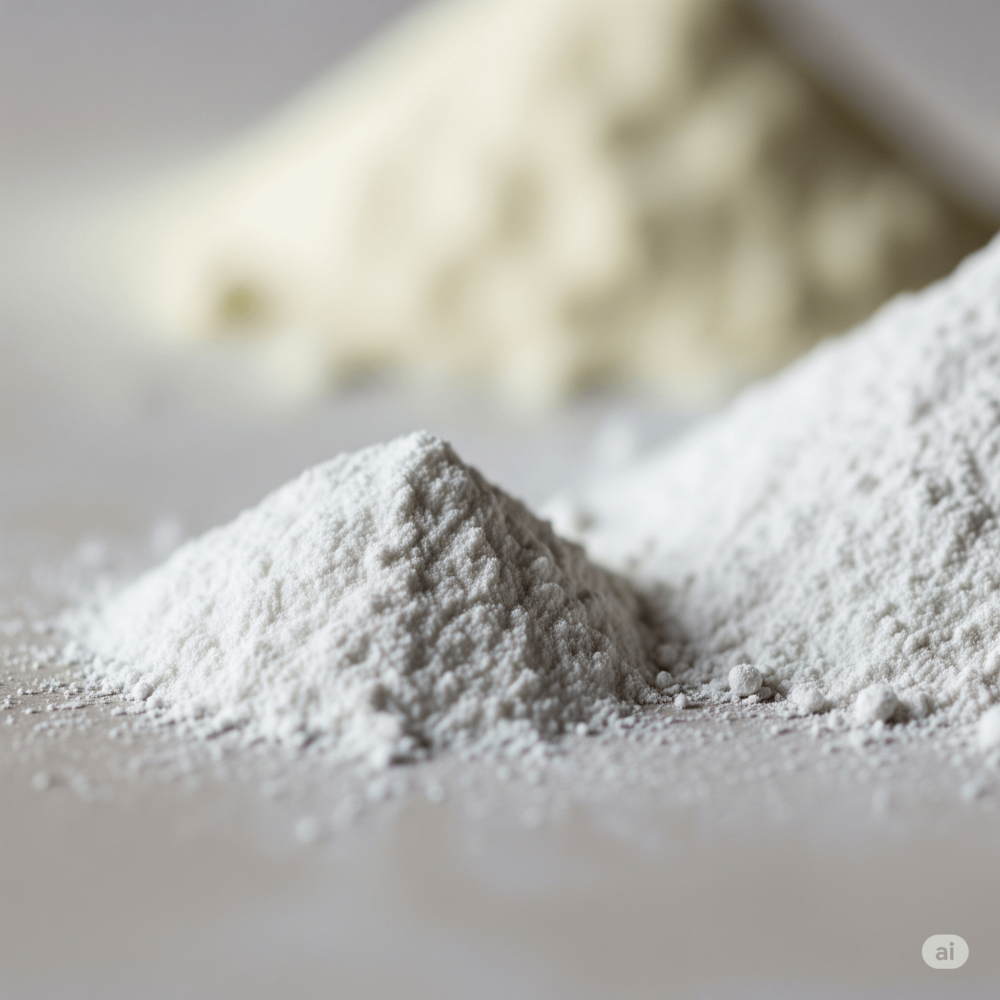
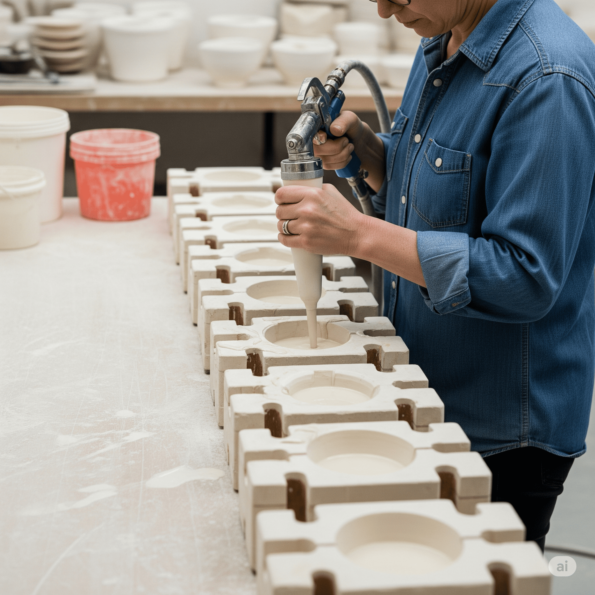
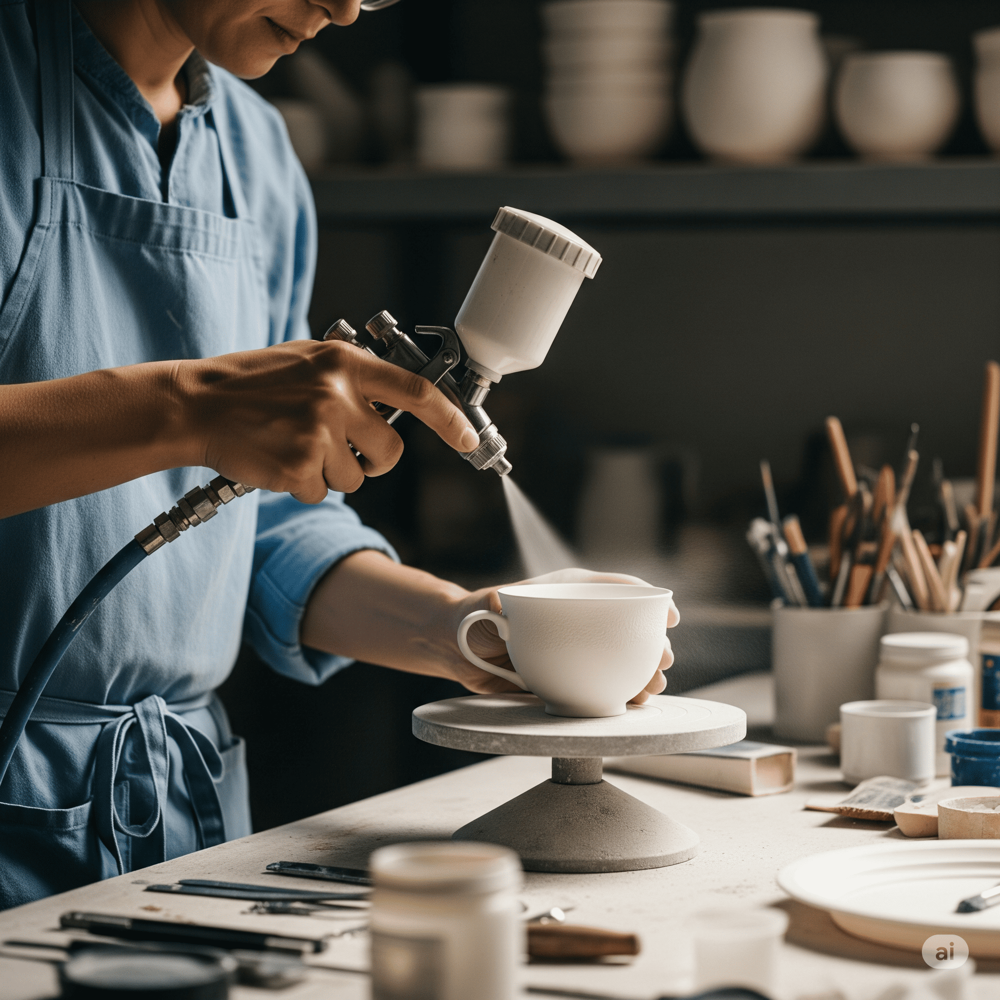
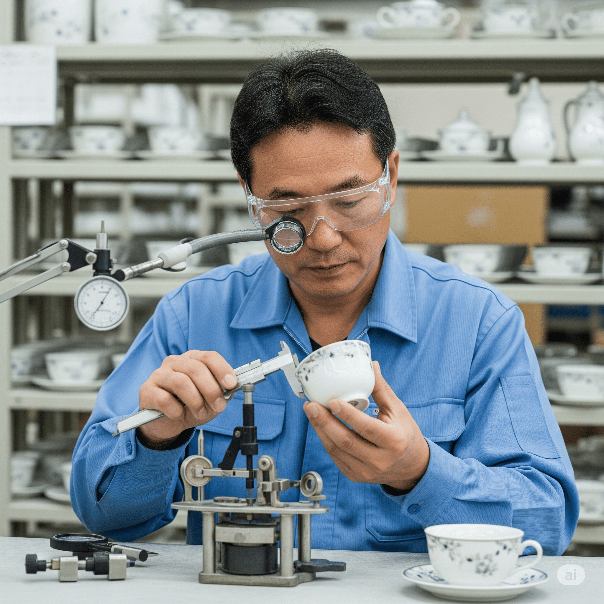
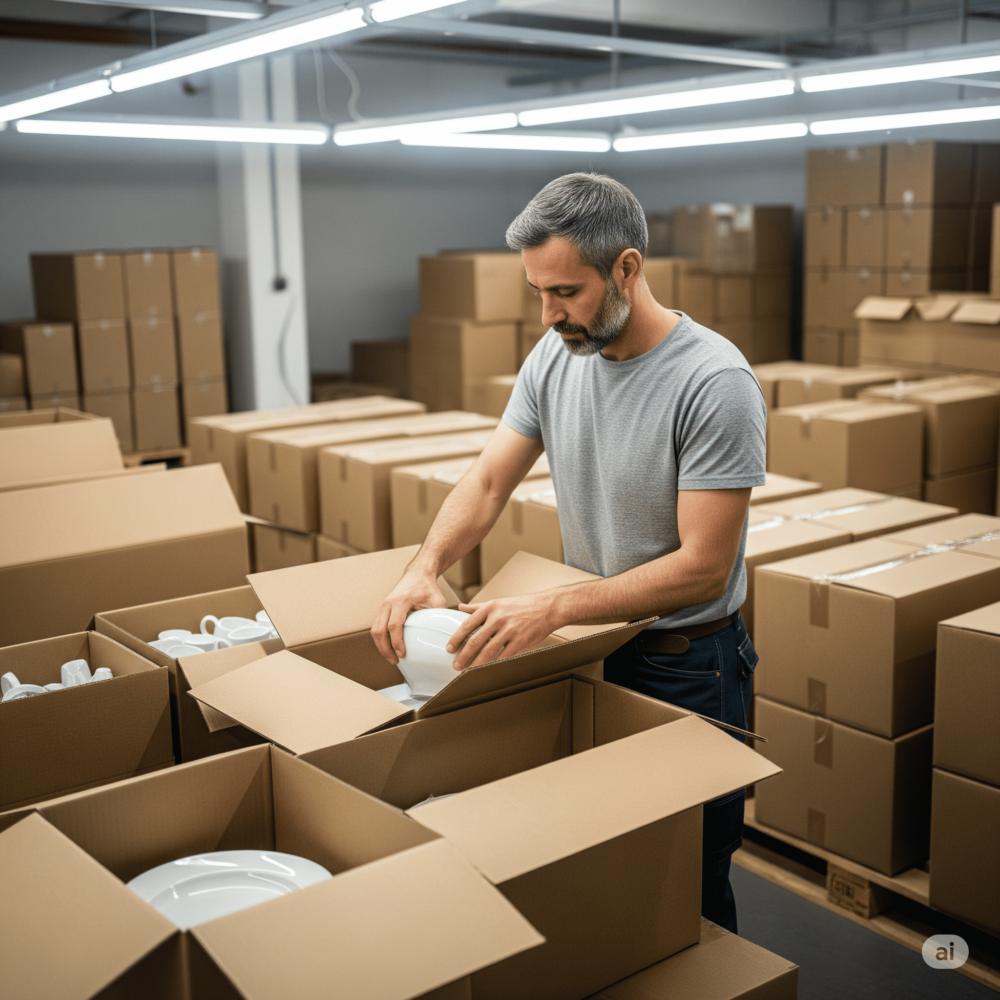
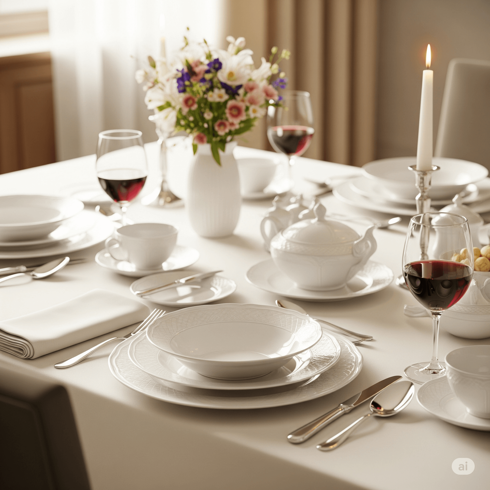

Bienvenue dans l'Art de la Porcelaine
La fabrication de la vaisselle en porcelaine est un art ancestral allié à une précision industrielle. Ce processus complexe transforme des matières premières modestes en objets d'une élégance et d'une durabilité exceptionnelles. Chez AB CERAM, nous perpétuons cette tradition avec passion et innovation, en veillant à ce que chaque pièce qui sort de nos ateliers soit un gage de qualité et de raffinement.
Cette page vous invite à découvrir les secrets de fabrication, étape par étape, de nos collections de vaisselle en porcelaine. De la sélection minutieuse des minerais à l'emballage soigné du produit fini, explorez un savoir-faire unique.
Vue d’ensemble de l'usine AB CERAM.

Aperçu du Processus de Fabrication
Matières Premières
Préparation Émaille
Modelage & Moulage
Formage & Émaillage
Décoration & Impression
Contrôle Qualité
Emballage & Stockage
Étape 1 : Préparation des Matières Premières
Tout commence par une sélection rigoureuse des minerais. Le kaolin pour sa blancheur et sa plasticité, le feldspath agissant comme fondant, et le quartz pour la structure et la translucidité. Ces composants sont ensuite pesés avec précision et subissent un broyage fin pour obtenir une pâte liquide homogène appelée "slip" ou barbotine. La qualité de cette préparation initiale est déterminante pour les propriétés finales de la porcelaine.
Composition Typique :
Ce graphique illustre les proportions typiques des principaux minerais utilisés.
Poudres de Céramiques.
Option : Schéma simple du processus de broyage.
Étape 2 : Préparation de l’Émaille
L'émail est la couche vitreuse qui recouvre la porcelaine, lui conférant sa brillance, son imperméabilité et sa résistance. Sa préparation exige un mélange précis de composants tels que les frittes (verres pré-fondus), les pigments pour la couleur, et les fondants. Ce mélange est ensuite broyé finement et sa viscosité est soigneusement ajustée pour garantir une application uniforme et une fusion parfaite lors de la cuisson.
Composants Clés de l'Émaille :
- Frittes (base vitreuse)
- Pigments (pour la couleur)
- Fondants (pour abaisser le point de fusion)
- Agents de suspension (pour la consistance)
Types d'Émailles Couramment Utilisés :
- Émail transparent brillant
- Émail mat
- Émail coloré (diverses teintes)
- Émail réactif (créant des effets uniques)
Operation de Preparation de l'Email.

Étape 3 : Modelage et Moulage
Le "slip" préparé est coulé dans des moules en plâtre poreux. Le plâtre absorbe l'eau du slip, formant une couche solide de porcelaine à la surface du moule. Une fois l'épaisseur désirée atteinte, l'excédent de slip est vidé. Les pièces sont ensuite laissées à sécher partiellement dans les moules avant d'être soigneusement démoulées. Cette étape définit la forme brute de la future vaisselle.
Processus de Coulage (Schéma Simplifié) :
Operation de Coulage.
Étape 4 : Formage et Émaillage
Après démoulage, les pièces "crues" sont encore fragiles. Elles subissent des retouches manuelles ou mécaniques pour éliminer les imperfections et affiner les détails (ex: lissage des bords, pose des anses). Vient ensuite l'application de l'émail, qui peut se faire par trempage, vaporisation (pulvérisation) ou badigeonnage, selon la forme de la pièce et l'effet désiré. Une couche uniforme est essentielle.
Comparaison Avant/Après Émaillage :
Avant Émaillage
Pièce "biscuitée" ou crue
Après Émaillage
Prête pour la cuisson d'émail
Operation d'émaillage Par Pulverisation.
Étape 5 : Décoration et Impression
La décoration est l'étape qui confère à la porcelaine son caractère unique et sa valeur esthétique. Plusieurs techniques peuvent être employées, avant ou après la cuisson de l'émail : peinture à la main pour des pièces d'exception, application de transferts (décalcomanies) pour des motifs complexes et répétitifs, ou sérigraphie. Des finitions spéciales comme la dorure à l'or fin ou des motifs personnalisés peuvent également être ajoutées.
Galerie de Styles de Décoration (Exemples) :
Peinture ou Transfert
Sérigraphie
Dorure
Sur demande
Artisan décorant un motif appliqué.

Étape 6 : Contrôle Qualité et Laboratoire
La qualité est notre priorité absolue. À chaque étape clé de la production, des contrôles rigoureux sont effectués. Notre laboratoire réalise des tests physiques (résistance aux chocs, à l'abrasion) et chimiques (conformité alimentaire, absence de métaux lourds). Le contrôle dimensionnel, la résistance thermique, et la brillance de l'émail sont également vérifiés pour s'assurer que chaque produit répond aux normes les plus strictes.
Indicateurs de Qualité (Exemples) :
Ce graphique montre des exemples de taux de conformité pour différents tests qualité.
Technicien inspectant une pièce .
Étape 7 : Emballage et Stockage
Une fois les contrôles finaux validés, la vaisselle en porcelaine est prête pour le conditionnement. Chaque pièce est emballée avec le plus grand soin pour la protéger durant le transport et le stockage. Notre organisation logistique assure une gestion efficace des stocks et une expédition rapide et fiable vers nos clients, qu'ils soient nationaux ou internationaux.
Flux Logistique Simplifié :
Operation d'emballage et stockage.
Merci pour votre attention !
Notre processus de fabrication allie tradition artisanale et technologies de pointe pour vous offrir une vaisselle en porcelaine d'une qualité irréprochable. Nous sommes fiers de notre engagement envers l'excellence, l'innovation constante et le respect d'un savoir-faire transmis de génération en génération.
Nos Engagements :
- Qualité supérieure et durabilité
- Innovation dans les designs et techniques
- Respect de la tradition artisanale
- Service client attentif
Contactez-nous :
SARL AB CERAM
Site web : [Votre site web]
Téléphone : +213 (0) 778 885 457
E-mail : abceram1947@gmail.com
Logo de l'entreprise :

Produit final (assiette, tasse, service complet) .
